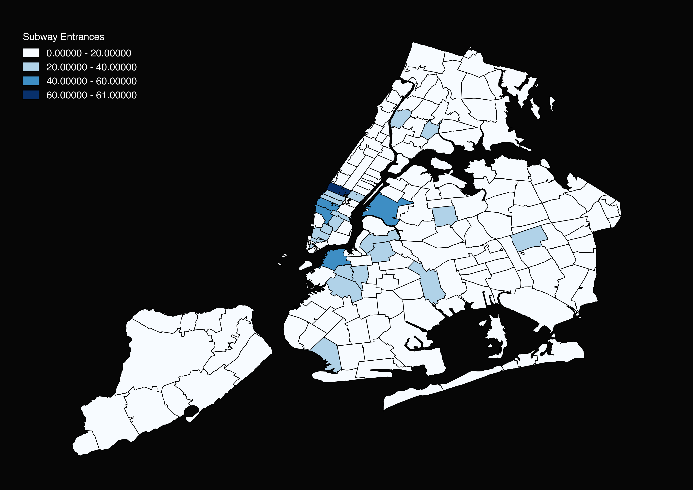

Mètodes d'Investigació Criminològica Avançada
Sessió 13: Autocorrelació
John Palmer
Les entrades de metro a Nova York

Mesures de Autocorrelació
I de Moran
$$ I = \frac{N}{S_0} \sum_{i=1}^N\sum_{j=1}^N \frac{w_{ij}(x_i-\mu)(x_j-\mu)}{\sum_{i=1}^N (x_i - \mu)^2} $$
$$ S_0 = \sum_{i=1}^N\sum_{j=1}^N w_{ij} $$
I de Moran
$$ E(I) = \frac{-1}{N-1} $$
OLS Model
$$ y = \alpha + \beta X + \epsilon$$
Model amb retard espacial en un variable independent
$$ y = \alpha + \beta X + \rho W X + \epsilon$$
Model amb retard espacial en els variables dependent i independent
$$ y = \alpha + \beta X + \rho_1 W X + \rho_2 W X + \epsilon$$
Model de errors espacials
$$ y = \alpha + \beta X + \epsilon$$
$$ \epsilon = \lambda W u + e$$